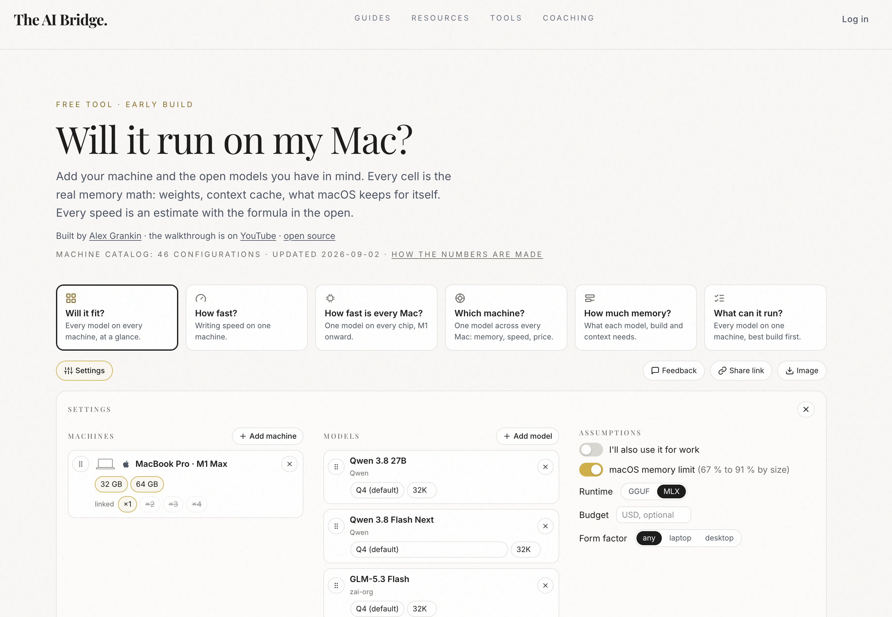
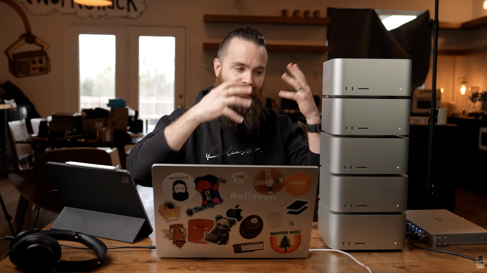
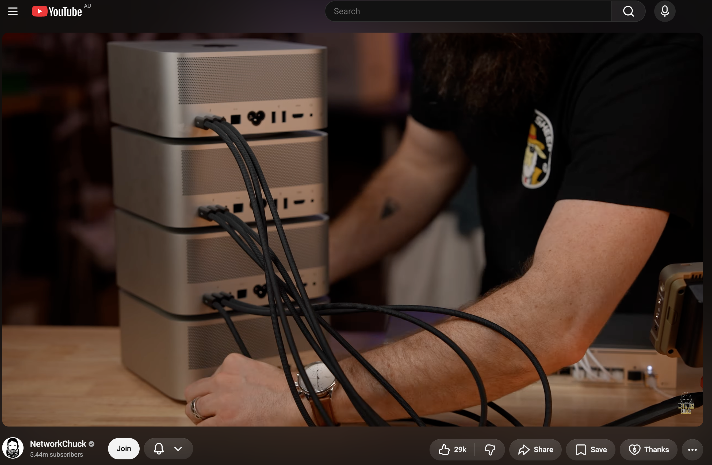
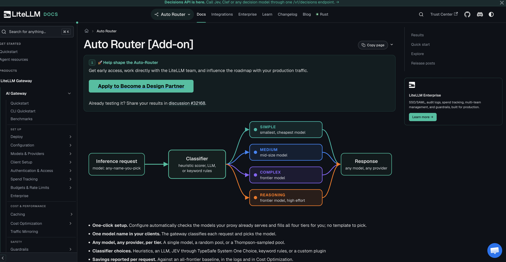

Running models on our own machines.
This week
I have been reading about running large language models on machines we control.
Reading
How a model actually gets onto a machine, and what makes it fast or slow.
Building
A Linux PC put together for models and the tools around them.
01
Try tools, formats, and models without waiting on a vendor roadmap.
02
The prompt, the files, and the answers can stay on hardware we own.
03
A machine has a price. A hosted API keeps charging for every token.
VRAM
Enough to hold the whole model. If the weights do not fit, it does not run.
RAM
Memory bandwidth is what turns into tokens per second.
Disk
A fast drive, because loading the model is its own wait.
One app. Windows, Mac, and Linux.
Download it, pick a model, and talk to it.
GGUF
The portable format. This is the one for the Linux PC.
MLX
Apple's format. This is the one that suits a Mac.
Tool use
Search the web, run code, read a file, call an API, or use MCP servers.
Reasoning
Harder problems, maths, and work that takes more than one step.
Weights in GB ≈ parameters, in billions × bytes per weight.
FP16
2 bytes
A 70 billion parameter model is about 140 GB.
4-bit
0.5 bytes
The same model is about 35 GB. Lower resolution, much more likely to fit.
Before downloading a model, check the memory maths.
The AI Bridge does that in the open: weights, context, and what the machine keeps for itself.

In LM Studio
Load the model and show a normal conversation, running locally.
In Claude
Point the config at the machine in the room instead of the hosted API.
Buy
A small NVIDIA machine aimed at this job.
Build
The same idea as the desk PC, taken out of the office and into a rack.
One machine is a computer.
A stack is a bigger pool of memory, still on the desk.

The cables are the point.
RDMA lets one Studio read another's memory directly, instead of copying every token across a normal network.

Same kind of comparison: how many tokens come back each second.
| Where it runs | Tokens / sec |
|---|---|
| Anthropic / ChatGPT | 100 |
| RTX 5090 | 50–70 |
| Top-spec Mac Studio | 40–70 |
| NVIDIA DGX Spark | 50–70 |
| Mac Studio cluster | Shared over RDMA |
n8n
Not one chat. A run of steps that can call the model and then do the work.
LiteLLM

One final thing
There are 24 hours in a day.
We can.